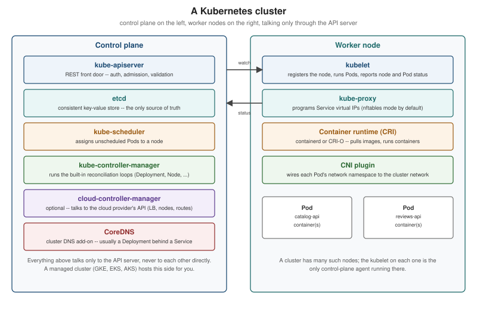

Introduction and Architecture
|
This content was generated with the assistance of AI and should be verified against the official documentation before being relied on in production. |
Kubernetes is a system for automating the deployment, scaling and management of containerized applications. This page, and the rest of the section, is written against Kubernetes 1.37 (latest patch 1.37.1), kubectl 1.37, kind 0.33 and Helm 4.3 — see the section index for the full version baseline and reading path. It answers two questions before anything else: why does a system like this need to exist at all, and what are the pieces that make it work? Everything later in the section assumes the vocabulary introduced here.
Why orchestration exists
Running one container by hand (docker run) is easy. Running a few dozen containers, across several machines,
so that the right number of copies of each one is always running, traffic reaches only the healthy copies, a
crashed process is replaced without a human noticing, and a machine failure does not take the application down
with it, is a different problem. That problem is orchestration, and it existed before containers did:
config-management tools such as Chef, Puppet, Ansible and Salt already automated configuring fleets of virtual
machines, but a VM took minutes to boot, which made "just start another one" too slow to react to failure.
Containers start in a second or two, which makes scheduling, re-balancing and failure replacement practical for
the first time — but only if something is watching the fleet and re-acting to it continuously. That something is
an orchestrator.
Two design habits follow from this. First, design for failure: containers are short-lived and fragile, so an application must assume any instance can disappear at any moment and keep its state outside the container. Second, prefer small microservices that an orchestrator can replace independently. Isolation between those containers on a shared kernel rests on Linux cgroups (resource accounting and limits) and namespaces (separate views of processes, network and filesystem), which is what makes it safe to pack many of them onto one machine. Orchestration also decouples the pieces: clients reach a Service rather than a particular Pod, and teams change one component without coordinating a redeploy of the rest.
The Borg and Omega lineage
Kubernetes is Google’s third generation of cluster-management system, and its design choices come directly from running that lineage in production for over a decade:
-
Borg (used inside Google since the mid-2000s) proved the core ideas: a central scheduler that packs many jobs from many teams onto a shared fleet of machines, and a declarative job specification that the system keeps satisfied rather than a script that runs once.
-
Omega generalized Borg’s scheduler around a shared-state, optimistic-concurrency data store, an idea that reappears in Kubernetes as
resourceVersion-based optimistic concurrency against etcd (see Objects and the Kubernetes API). -
Kubernetes, open-sourced by Google in 2014 and donated to the newly formed Cloud Native Computing Foundation in 2015, took those lessons and rebuilt them as an open, API-driven system that anyone can run, instead of an internal Google tool. The name (Greek for "helmsman") and its seven-spoke logo both allude to this steering role.
The practical consequence is that Kubernetes was designed from day one for multi-tenant, shared-fate clusters: many independent applications, owned by different teams, competing for the same pool of CPU, memory and machines, each described declaratively and each expected to survive the loss of any single node.
Velocity, immutable infrastructure, declarative configuration and reconciliation loops
Four ideas, more than any single feature, explain how Kubernetes clusters stay reliable while changing constantly:
-
Velocity. The point of automating deployment is not novelty, it is being able to ship changes often and safely: rolling updates, canaries and instant rollbacks are only safe to do dozens of times a day because the system, not a person, verifies each step.
-
Immutable infrastructure. A running container’s image is never patched in place. A new version is built as a new image with a new tag, and the old Pods are replaced wholesale by new ones running that image (see ReplicaSets and Deployments). Rolling back means redeploying the previous image, not undoing a change on a live machine — there is no configuration drift to reason about, because nothing is ever mutated after it starts.
-
Declarative configuration. A manifest says the desired end state ("three replicas of this Pod template should exist"), not the steps to get there. The same YAML, checked into version control, can be re-applied at any time and Kubernetes computes the difference itself; an imperative script that issues "create three of these" cannot be replayed safely once one of them already exists.
-
Reconciliation loops. Declarative configuration is only useful if something keeps enforcing it. Kubernetes controllers do this by continuously repeating the same three steps: observe the current state (by watching the API server), diff it against the desired state stored in etcd, and act to close the gap (create, update or delete objects) — see [reconciliation-loop]. This is the mechanism the books call self-healing: a killed Pod, a node that disappears, or a manifest edited by hand are all just more state to reconcile away, with no special-cased recovery code.
Separation of concerns
A cluster involves at least three different operators, each caring about a different layer, and Kubernetes' object model exists to keep those layers from having to know about each other:
| Operator | Owns | Interacts through |
|---|---|---|
Application developer |
The container image, the application’s own configuration and its Kubernetes manifests (Pod template, resource requests, probes, ConfigMaps and Secrets) |
Pods, Deployments, Services, ConfigMaps, Secrets |
Cluster operator |
Cluster-wide policy: namespaces, RBAC, resource quotas, NetworkPolicies, ingress and autoscaling configuration |
Namespaces, RBAC objects, ResourceQuotas, admission policies |
OS / infrastructure operator |
The nodes themselves: the OS, the container runtime, the kubelet, the CNI plugin and (on a managed service) the control plane |
Node objects, cluster-autoscaler, the cloud provider’s API |
An application manifest never names a machine, an IP address or a kernel version; it only asks for CPU, memory and a handful of scheduling hints, and the scheduler and the node components translate that into an actual placed, running process. That indirection is what lets the same Deployment manifest run unchanged on a laptop’s kind cluster, a company’s on-premises cluster and a managed cloud offering.
When not to use Kubernetes
Kubernetes solves a specific problem — running many independent, horizontally scalable, mostly stateless services across a shared fleet of machines — and it adds real operational weight to solve it. It is usually the wrong tool when:
-
The workload is a single application on a single machine (or a small, fixed number of machines) that does not need to scale, self-heal across hosts, or be scheduled dynamically — a systemd service, or Docker Compose, does the job with far less to operate.
-
The team has no one available to own cluster upgrades, node OS patching, etcd health and API-server security, and cannot buy that operational burden away with a managed offering (see Managed Kubernetes and Distributions).
-
The application is a long-lived batch pipeline better served by a dedicated data-processing scheduler, or a short-lived function better served by a serverless/FaaS platform, where per-invocation billing and cold-start behaviour matter more than always-on Pods.
-
The workload’s storage and networking requirements do not map onto Kubernetes' abstractions at all — for example, tightly coupled HPC jobs that need a specialized interconnect and scheduler.
In all of these cases, the honest trade-off is: Kubernetes buys you a uniform way to describe, schedule, scale and heal workloads, at the cost of running (or paying someone to run) a distributed system to do it.
Kubernetes vs Docker Compose and Swarm
Compose and Swarm solve the same broad problem at a much smaller scale, and it is worth being explicit about where each one stops:
| Compose / Swarm | Kubernetes | |
|---|---|---|
Scope |
A single host (Compose) or a small, mostly homogeneous swarm of Docker Engines |
A cluster of any size, with a control plane independent of any single node |
Configuration |
One |
Many small, composable objects (Pod, Deployment, Service, ConfigMap, …) reconciled independently |
Scheduling |
Simple, built into the Engine; limited placement constraints |
A dedicated scheduler with rich affinity, taint/toleration and topology-spread rules (see Scheduling and Disruptions) |
Networking / ingress |
An embedded overlay network and routing mesh |
A pluggable CNI layer, Services, Ingress and the Gateway API (see Services and the Gateway API) |
Ecosystem |
Small, Docker-native |
The CNCF ecosystem: Helm charts, Operators/CRDs, service meshes, GitOps tooling |
Compose remains the right tool for local development and small deployments — indeed every page in this section still uses images and, where useful, Compose files built the way Compose in Practice describes, and moving a Compose project onto Kubernetes is exactly the migration path that page’s Compose Bridge discussion points toward. Orchestration, Swarm and Kubernetes covers Swarm on its own terms and explains why this site treats Kubernetes, not Swarm, as the default target once a workload outgrows a single host.
Control-plane and node components
A Kubernetes cluster has two kinds of machines: a small number running the control plane (the brain), and any number of worker nodes (where application Pods actually run). [cluster-architecture] shows both sides and how they only ever talk through the API server.

Control-plane components
| Component | Responsibility |
|---|---|
|
The single front door to the cluster: a REST API server that validates and admits every request, is the only
component that talks to etcd directly, and is what |
|
A consistent, distributed key-value store that holds the entire state of the cluster: every object, its spec and its status. It is the only place cluster state actually lives; every other control-plane component is, in effect, a cache or a worker acting on what it reads from the API server, which in turn reads from etcd. |
|
Watches for Pods that have no node assigned yet, and assigns one, based on resource requests, affinity and anti-affinity rules, taints and tolerations, and topology spread constraints (see Scheduling and Disruptions). It only decides; the kubelet on the chosen node does the actual work of starting the Pod. |
|
Runs the built-in controllers as a single binary process: the node controller (watches node health), the replication/Deployment/StatefulSet/Job controllers, the endpoint(-slice) controller, the service-account and token controllers, and others. Each controller is exactly one reconciliation loop (see [reconciliation-loop]), and this process just runs all of the in-tree ones together. |
|
Optional, and only present when the cluster runs on (or against) a cloud provider. It separates
cloud-provider-specific logic — provisioning a cloud load balancer for a |
Node components
| Component | Responsibility |
|---|---|
|
The agent that runs on every node. It registers the node with the API server, watches for Pods assigned to that
node, and drives the container runtime to start, stop and restart their containers so the actual state matches
each Pod’s spec. It also reports node and Pod status back to the API server, runs container probes
(see Health Probes and Lifecycle), and exposes the
resource-usage metrics that |
|
Programs each node’s packet-forwarding rules so that a Service’s stable virtual IP load-balances across its backing Pods. Since Kubernetes 1.33 the recommended, GA mode is nftables; the older iptables mode is still supported, and the IPVS mode was deprecated in 1.35. All three are internal implementation details of the same Service abstraction (see Services). |
Container runtime (via the CRI) |
The program that actually pulls images and runs containers — |
Addons
Two components are not part of the Kubernetes core, yet are present on almost every cluster because so much else depends on them:
-
CoreDNS provides cluster-internal DNS: it lets a Pod resolve
<service>.<namespace>.svc.cluster.localto a Service’s virtual IP, which is how most applications discover each other (see DNS and Service Discovery). It replaced the earlier SkyDNS/kube2sky combination and is itself deployed as an ordinary Deployment and Service, reconciled the same way as any application workload. -
A CNI (Container Network Interface) plugin gives every Pod its own network namespace, IP address and route into the cluster network — Kubernetes defines the interface but ships no default implementation; kind installs a minimal one (
kindnet) automatically, while production clusters typically choose Calico, Cilium or a cloud provider’s own CNI.
Node-to-control-plane communication, leases and controllers
Nodes never receive a push from the control plane the way an SSH-based deployment tool would. Instead:
-
The kubelet on each node periodically updates a Lease object for itself, in the
kube-node-leasenamespace, as a lightweight heartbeat — far cheaper to update frequently than the full Node object’s status. -
The node controller (inside
kube-controller-manager) watches those Leases. If a node’s Lease stops being renewed, the node is markedNotReadyafter a grace period, and eventually its Pods are evicted so their controllers can reschedule replacements elsewhere. -
Every other controller (Deployment, Job, StatefulSet, endpoint-slice, …) follows the exact same shape: watch the API server, compare against desired state, act. The node controller is simply the reconciliation loop that happens to watch node health instead of a workload.
-
All communication is control plane → API server ← node; the kubelet only ever calls out to the API server (to watch and to report status), and the API server never opens a connection into a node except through the kubelet’s exposed HTTPS endpoint, used for
kubectl exec/logs/port-forwardand for metrics scraping.
History: "minions", the cAdvisor daemon, and dockershim
Book 1 (2015) and, to a lesser extent, Book 2 (2017) describe an architecture that has since been renamed or replaced in three places worth calling out explicitly, because the terms still turn up in older material:
-
Book 1 calls a worker machine a "minion". That term was renamed to node before Kubernetes 1.0 and has not been used since; every current API object, flag and doc says "node".
-
Book 1 lists cAdvisor as a separate daemon running alongside the kubelet on each node. cAdvisor’s container-resource-usage collection has long since been embedded directly inside the kubelet rather than run as its own process; there is nothing separate to install or operate.
-
Neither book could mention it, since it postdates both, but it is worth flagging here because it is exactly this kind of node-level plumbing: dockershim — the kubelet shim that let Docker Engine itself act as a CRI runtime — was removed in Kubernetes 1.24. Docker-built images are completely unaffected (they are OCI images either way, see Docker Architecture and the OCI); what changed is that the kubelet now talks to containerd or CRI-O directly instead of through Docker Engine and dockershim.
What happens during kubectl apply
[kubectl-apply-sequence] traces one kubectl apply of a new Deployment through every control-plane and node
component described above, down to the container runtime starting the Pod’s containers.
Every arrow into etcd goes through the API server; nothing else is allowed to read or write it directly, which is what makes RBAC and admission control (see Authentication, Authorization and RBAC) a complete mediation point for the whole cluster.
Source: Kubernetes components and Kubernetes architecture
The reconciliation loop
Every controller in kube-controller-manager, the scheduler, the kubelet, and any custom controller or operator
(see Custom Resources and Operators) is a
different instance of this same loop, applied to a different slice of the object graph. Because the loop is
level-triggered (it always re-reads the current state, rather than reacting only to the one event that just
happened), a controller that misses an update, crashes and restarts, or is simply started for the very first
time against an already-populated cluster all converge on the same correct result. This is the mechanical
explanation behind the informal term self-healing: nothing has to detect "a Pod died" as a special case, because
the replica count is re-checked from scratch on every pass regardless of why it drifted.